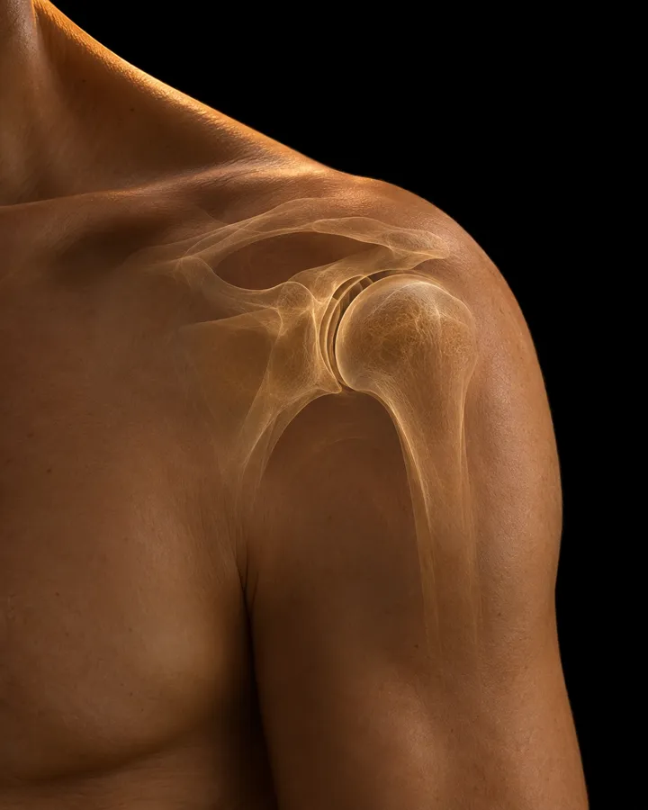
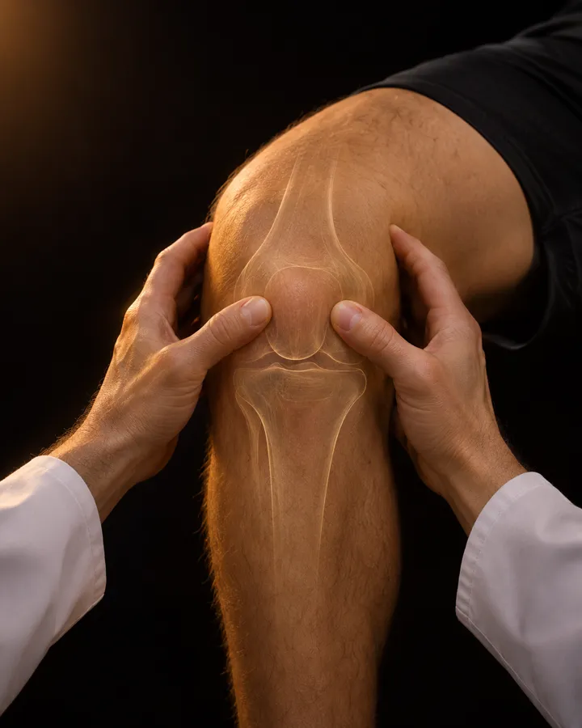
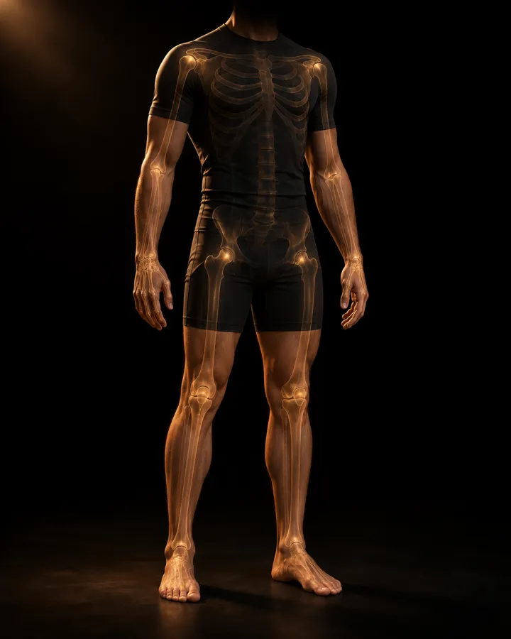
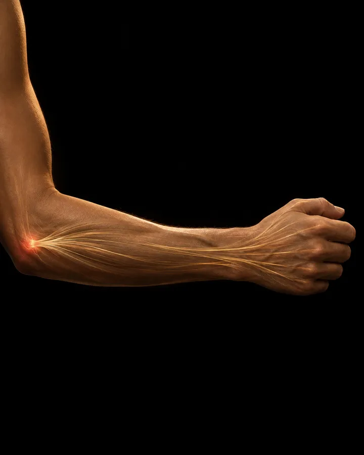
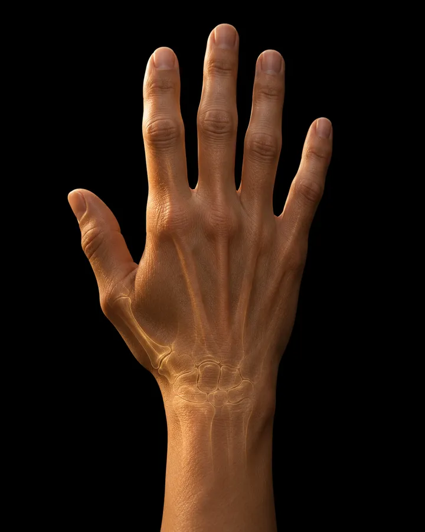
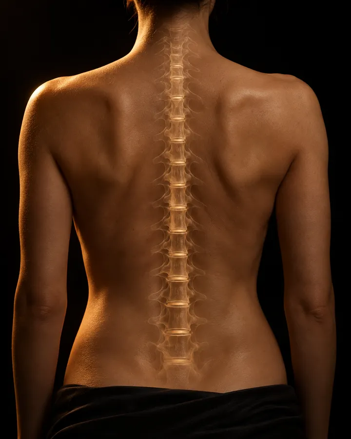
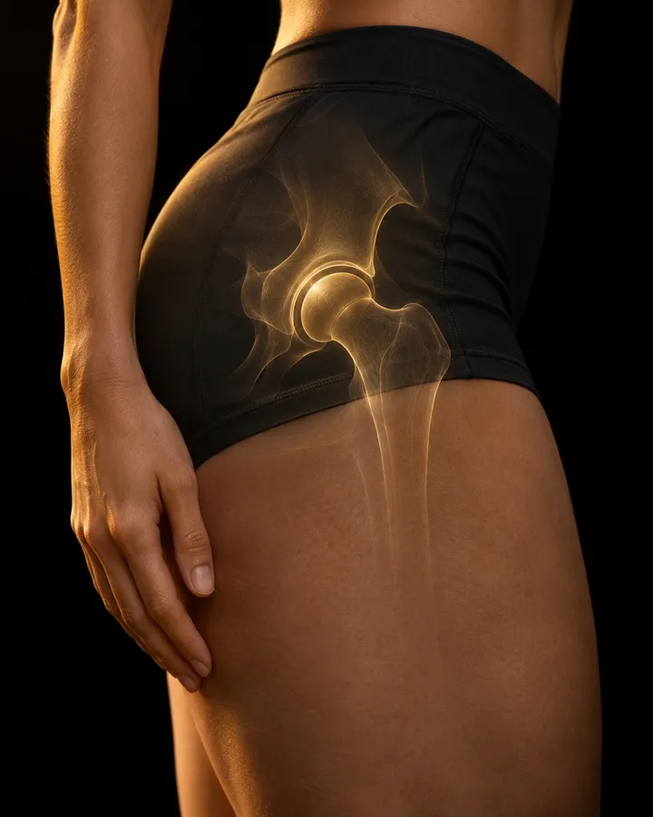
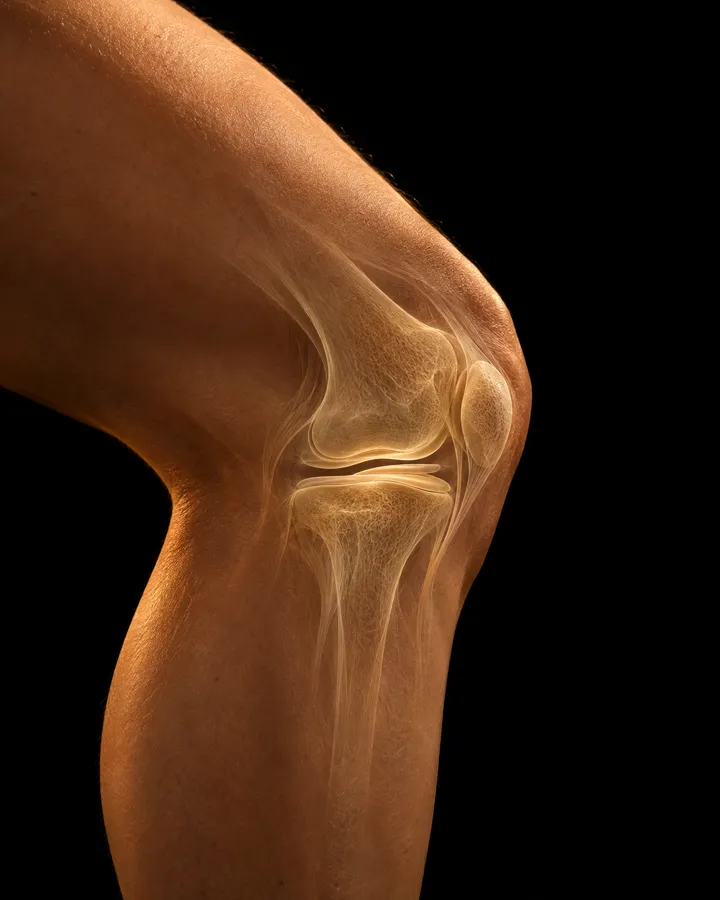
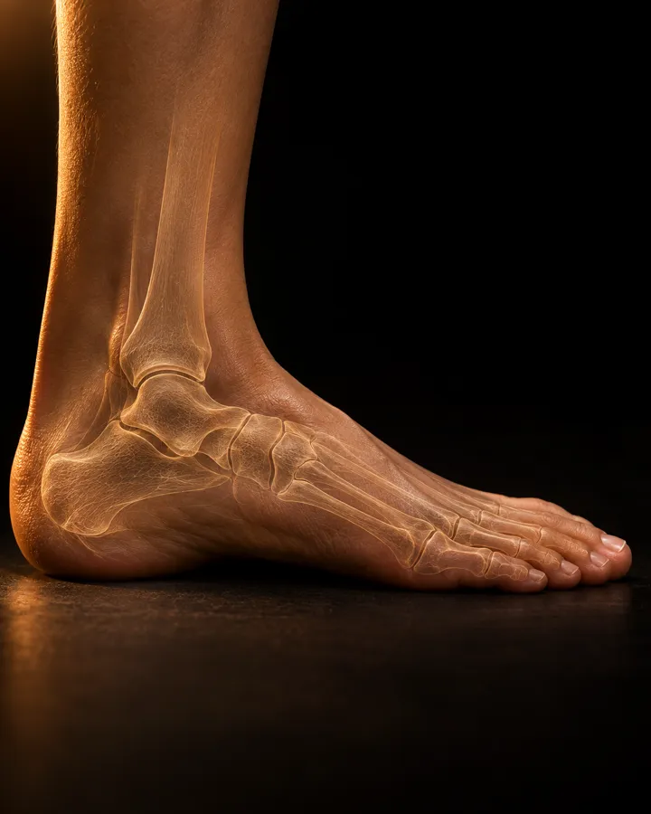
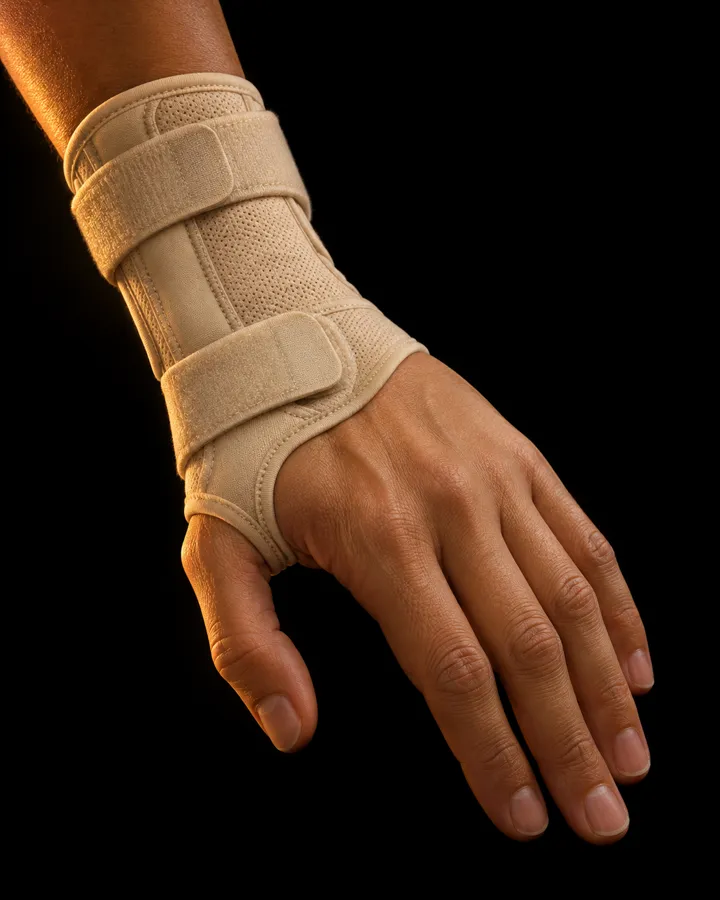

Ombro
Dor ao erguer o braço ou ao deitar sobre ele, rigidez que avança aos poucos ou ombro que sai do lugar numa queda.
Procure avaliação se a dor passa de três semanas, acorda à noite ou tira a força do braço.
Dor no ombro, nas costas, no joelho ou no pé, ou uma lesão depois de queda ou torção. A consulta procura a causa e indica o tratamento.
Cirurgião da mão, com título em ortopedia e traumatologia (TEOT 17.744)
Dr. Pedro Sarzi · Médico · CRM-SP 183.332 · RQE 110447

Toque numa região do corpo para ver as queixas mais comuns e quando procurar avaliação.


Dor ao erguer o braço ou ao deitar sobre ele, rigidez que avança aos poucos ou ombro que sai do lugar numa queda.
Procure avaliação se a dor passa de três semanas, acorda à noite ou tira a força do braço.

Dor do lado de fora ao segurar ou torcer objetos, o cotovelo de tenista, ou formigamento no anelar e no mínimo.
Faz parte da cirurgia da mão. Procure avaliação se a dor não melhora em algumas semanas ou se os dedos formigam.

Formigamento nos dedos, dedo que trava, dor do lado do polegar, caroço no punho ou lesão depois de queda ou corte.
É a área do Dr. Pedro, cirurgião da mão. Cada condição tem uma página própria.

Dor no pescoço ou na parte baixa das costas, às vezes descendo para a perna. A maioria melhora em algumas semanas, sem cirurgia.
Perda do controle da urina ou das fezes, ou dormência entre as pernas: pronto-socorro no mesmo dia.

Dor na virilha ao andar, dificuldade para calçar meias ou dor na lateral da coxa ao deitar de lado.
Procure avaliação se a rigidez aumenta ou se você passou a mancar. Depois de uma queda, sem conseguir apoiar: pronto-socorro.

Dor ao subir escadas, estalo, joelho que trava ou falseia e inchaço depois de uma torção.
Procure avaliação se ele incha depois de torcer ou se a dor limita a caminhada por mais de algumas semanas.

Torção com inchaço, dor no calcanhar nos primeiros passos da manhã ou dor atrás do calcanhar.
Se logo depois da torção você não consegue dar quatro passos, o atendimento é no mesmo dia.
A maior parte das dores pode esperar a consulta. Alguns sinais pedem atendimento no mesmo dia.
Em emergência, ligue 192, o SAMU.
Começa pela conversa e termina com um plano.
Onde dói, desde quando e o que piora. Depois, o exame do movimento, da força e da sensibilidade.
Radiografia, ultrassom ou ressonância só quando podem mudar a decisão. Leve os que você já tem.
Você sai sabendo a causa provável, o que fazer em casa e o tratamento indicado.
Depende da causa. Muitos casos começam sem procedimento, e a cirurgia entra quando é indicada.

Repouso relativo, remédio por tempo definido, fisioterapia, exercícios e órtese.
Medicação aplicada dentro da articulação, em casos selecionados.
Como é a infiltraçãoPreparo do próprio sangue, só nas situações autorizadas pelo CFM.
Quando o PRP é indicadoQuando o tratamento sem cirurgia não resolve ou a lesão pede. Você entende o porquê antes de decidir.
Como é cada cirurgiaCada condição tem uma página, com os sinais e os caminhos de tratamento.
Respostas gerais. O seu caso fica para a consulta.
A ortopedia cuida dos ossos, das articulações e dos músculos do corpo todo. A cirurgia da mão se dedica à mão, ao punho e ao cotovelo, com os nervos e os tendões. O Dr. Pedro é cirurgião da mão, com título em ortopedia e traumatologia (TEOT 17.744).
Sim. A consulta avalia a queixa e orienta o tratamento. Se o seu caso pedir outra área, você sai sabendo o próximo passo.
Não. A conversa e o exame físico resolvem boa parte das dúvidas. O exame é pedido quando pode mudar a decisão.
Gelo nos primeiros dias depois de uma torção ou pancada, com um pano entre o gelo e a pele. Calor ajuda mais na rigidez e na dor muscular que já dura algum tempo.
Na maioria das dores, não. Poupar só o movimento que dói costuma funcionar melhor: parado demais, o músculo enfraquece e a articulação enrijece.
Cobertura, valores e formas de pagamento variam conforme o plano e o local de atendimento.
Em três locais, em Alphaville e em Osasco. Veja em que dia ele está em cada um.
Os sábados de atendimento são dois por mês.
Alphaville
Segunda, das 17h às 19h
Rua Antônio Agú, 630, Centro, Osasco
Segunda, quarta, quinta, sexta e dois sábados por mês
Osasco
Quinta, das 17h às 20h
Toque no nome de um local para ver só os dias dele na agenda.

Veja o local no mapa sem sair da página.
O mapa é carregado do Google quando você toca no botão.